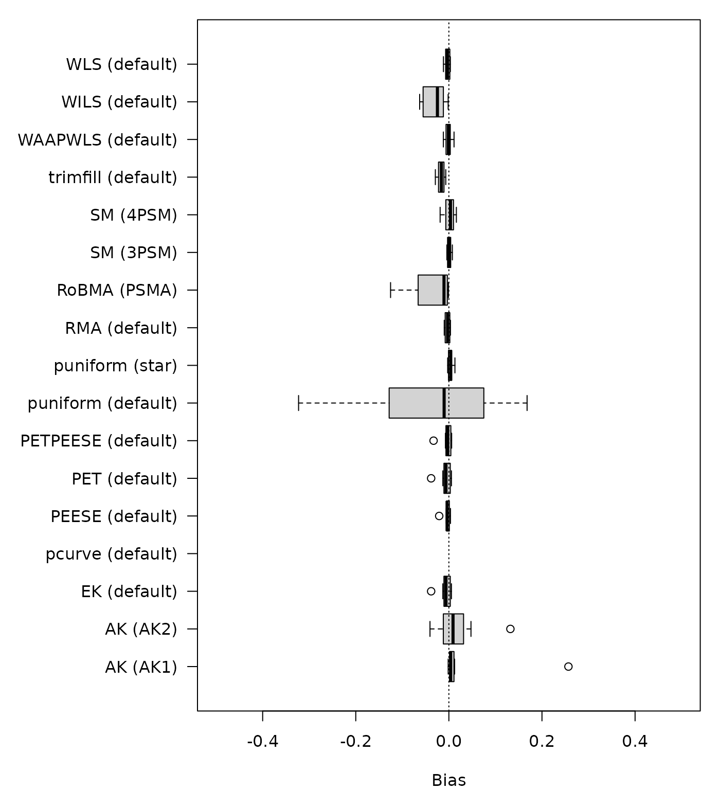
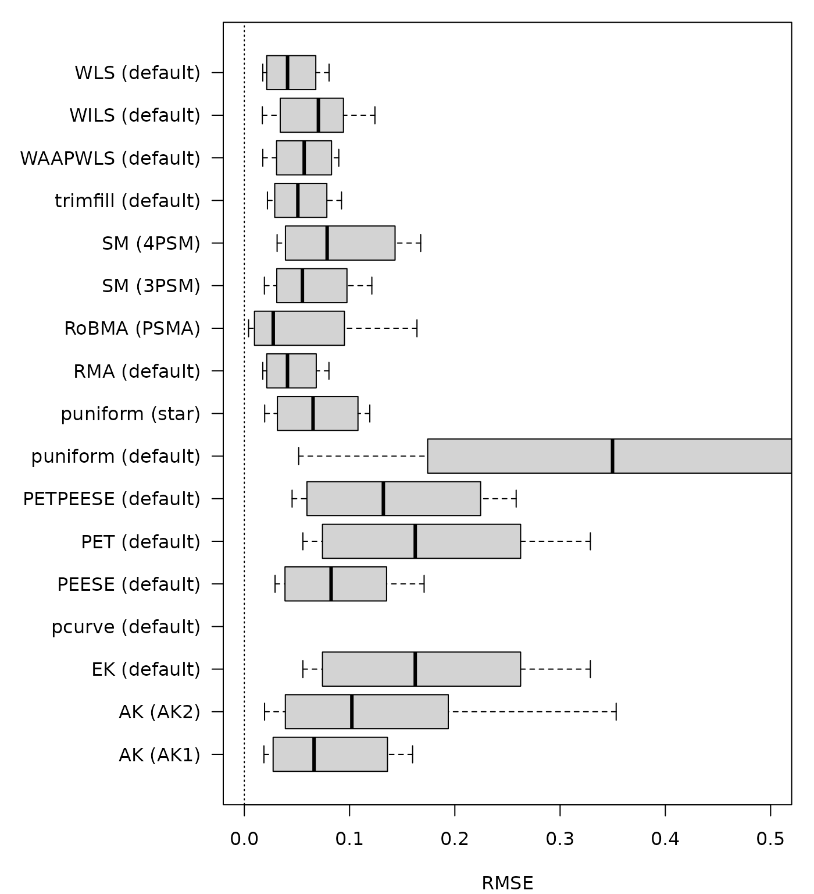
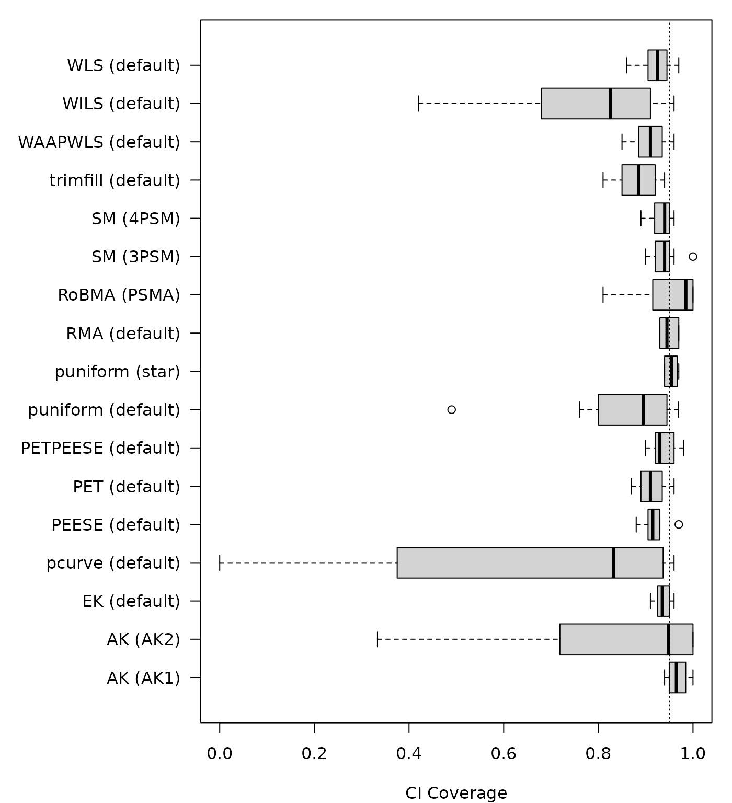
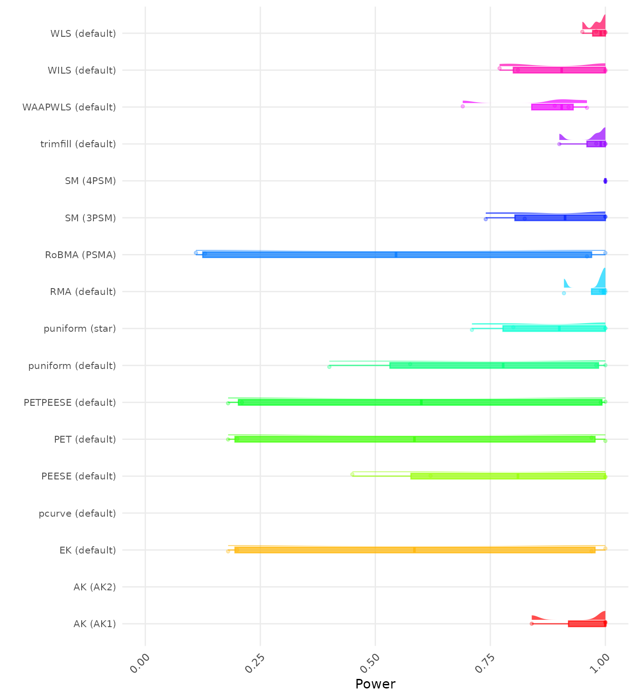
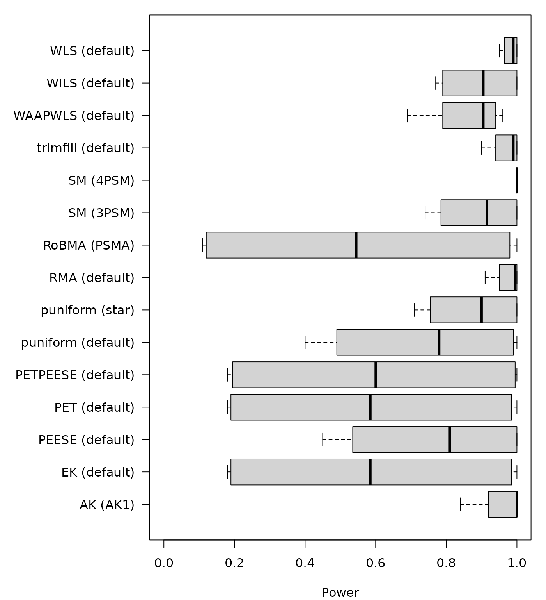
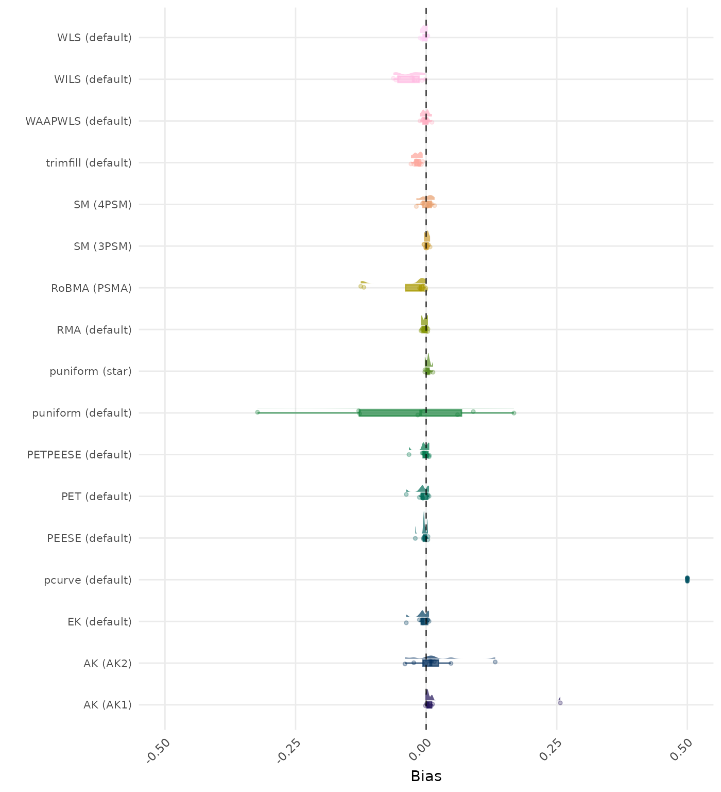
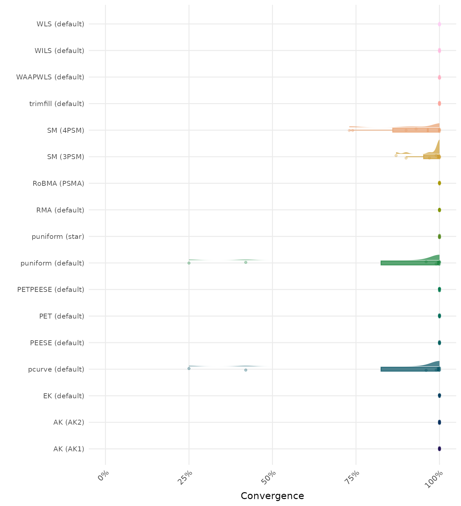
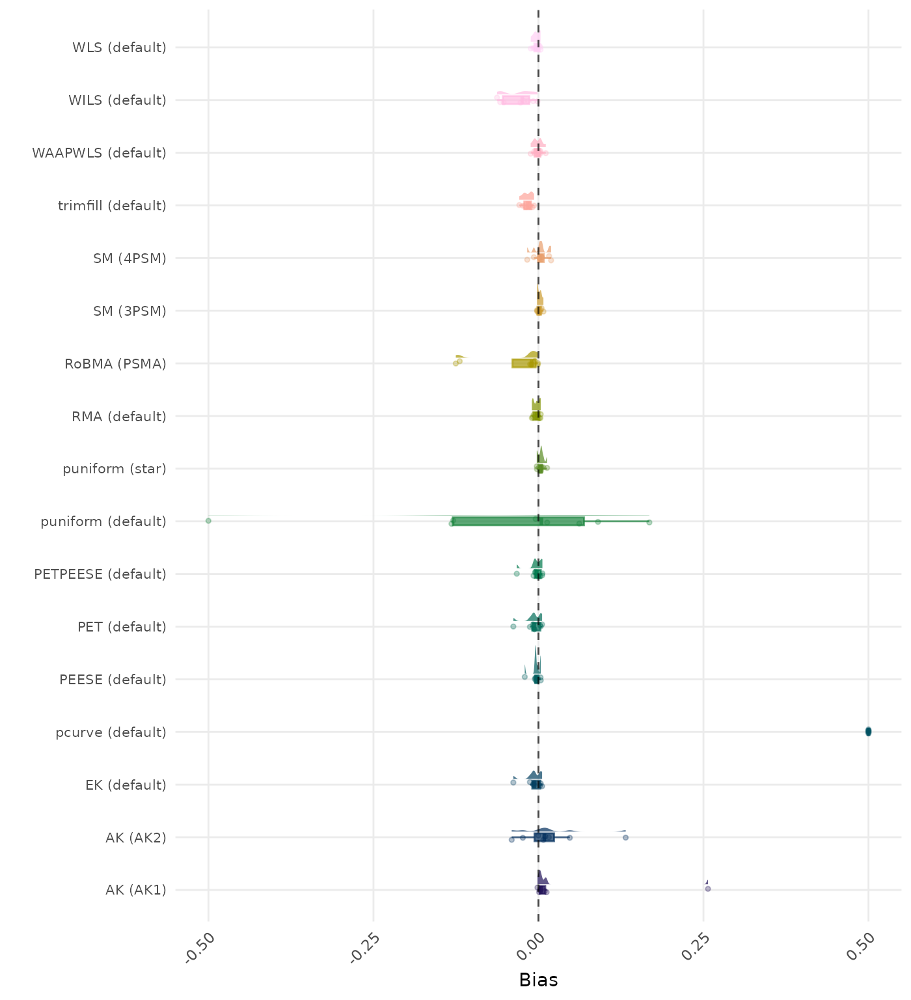
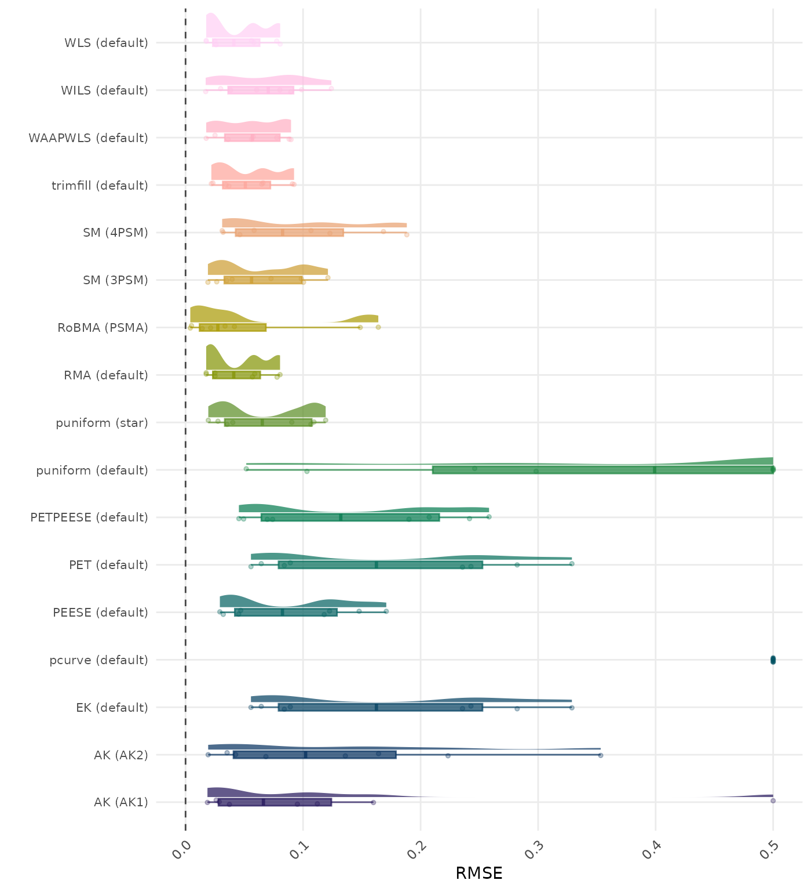
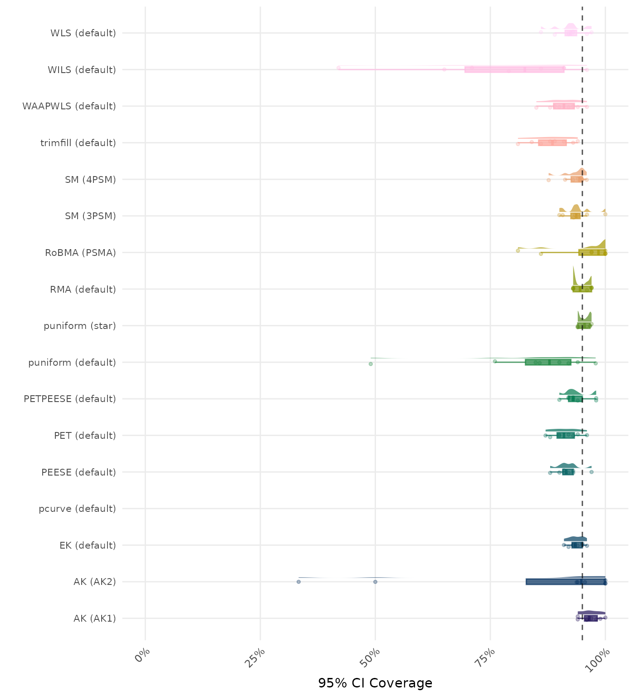

Average Performance
| Rank | Method | Value | Rank | Method | Value |
|---|---|---|---|---|---|
| 1 | WAAPWLS-default | -0.0010980 | 1 | SM-3PSM | 0.0010135 |
| 2 | SM-3PSM | 0.0015532 | 2 | WAAPWLS-default | -0.0010980 |
| 3 | RMA-default | -0.0029640 | 3 | SM-4PSM | 0.0013717 |
| 4 | WLS-default | -0.0030503 | 4 | RMA-default | -0.0029640 |
| 5 | SM-4PSM | 0.0031160 | 5 | WLS-default | -0.0030503 |
| 6 | puniform-star | 0.0035780 | 6 | puniform-star | 0.0035780 |
| 7 | PEESE-default | -0.0041343 | 7 | PEESE-default | -0.0041343 |
| 8 | PETPEESE-default | -0.0044870 | 8 | PETPEESE-default | -0.0044870 |
| 9 | EK-default | -0.0074985 | 9 | EK-default | -0.0074985 |
| 9 | PET-default | -0.0074985 | 9 | PET-default | -0.0074985 |
| 11 | trimfill-default | -0.0166649 | 11 | trimfill-default | -0.0166649 |
| 12 | AK-AK2 | 0.0186002 | 12 | AK-AK2 | 0.0186002 |
| 13 | WILS-default | -0.0309626 | 13 | WILS-default | -0.0309626 |
| 14 | RoBMA-PSMA | -0.0356814 | 14 | puniform-default | -0.0351918 |
| 15 | AK-AK1 | 0.0360356 | 15 | RoBMA-PSMA | -0.0356814 |
| 16 | puniform-default | -0.1484548 | 16 | AK-AK1 | 0.0360356 |
| 17 | pcurve-default | 3.8499397 | 17 | pcurve-default | 3.1562531 |
| Rank | Method | Value | Rank | Method | Value |
|---|---|---|---|---|---|
| 1 | WLS-default | 0.0448352 | 1 | WLS-default | 0.0448352 |
| 2 | RMA-default | 0.0449151 | 2 | RMA-default | 0.0449151 |
| 3 | trimfill-default | 0.0538304 | 3 | trimfill-default | 0.0538304 |
| 4 | RoBMA-PSMA | 0.0540589 | 4 | RoBMA-PSMA | 0.0540589 |
| 5 | WAAPWLS-default | 0.0560085 | 5 | WAAPWLS-default | 0.0560085 |
| 6 | SM-3PSM | 0.0641341 | 6 | SM-3PSM | 0.0634115 |
| 7 | WILS-default | 0.0673185 | 7 | WILS-default | 0.0673185 |
| 8 | puniform-star | 0.0685002 | 8 | puniform-star | 0.0685002 |
| 9 | PEESE-default | 0.0890598 | 9 | PEESE-default | 0.0890598 |
| 10 | SM-4PSM | 0.0942375 | 10 | SM-4PSM | 0.0900811 |
| 11 | AK-AK2 | 0.1302975 | 11 | AK-AK2 | 0.1302975 |
| 12 | PETPEESE-default | 0.1419706 | 12 | PETPEESE-default | 0.1419706 |
| 13 | EK-default | 0.1728335 | 13 | EK-default | 0.1728335 |
| 13 | PET-default | 0.1728335 | 13 | PET-default | 0.1728335 |
| 15 | AK-AK1 | 0.7131087 | 15 | puniform-default | 0.5713818 |
| 16 | puniform-default | 0.8857012 | 16 | AK-AK1 | 0.7131087 |
| 17 | pcurve-default | 3.8499397 | 17 | pcurve-default | 3.4117258 |
| Rank | Method | Value | Rank | Method | Value |
|---|---|---|---|---|---|
| 1 | AK-AK1 | 0.9673029 | 1 | AK-AK1 | 0.9673029 |
| 2 | puniform-star | 0.9541162 | 2 | puniform-star | 0.9541162 |
| 3 | RoBMA-PSMA | 0.9512500 | 3 | RoBMA-PSMA | 0.9512500 |
| 4 | RMA-default | 0.9487500 | 4 | RMA-default | 0.9487500 |
| 5 | SM-3PSM | 0.9389480 | 5 | SM-3PSM | 0.9400000 |
| 6 | PETPEESE-default | 0.9375000 | 6 | PETPEESE-default | 0.9375000 |
| 7 | EK-default | 0.9362500 | 7 | EK-default | 0.9362500 |
| 8 | SM-4PSM | 0.9332550 | 8 | SM-4PSM | 0.9335431 |
| 9 | WLS-default | 0.9225000 | 9 | WLS-default | 0.9225000 |
| 10 | PEESE-default | 0.9187500 | 10 | PEESE-default | 0.9187500 |
| 11 | PET-default | 0.9125000 | 11 | PET-default | 0.9125000 |
| 12 | WAAPWLS-default | 0.9087500 | 12 | WAAPWLS-default | 0.9087500 |
| 13 | trimfill-default | 0.8825000 | 13 | trimfill-default | 0.8825000 |
| 14 | puniform-default | 0.8368219 | 14 | puniform-default | 0.8424621 |
| 15 | AK-AK2 | 0.8332986 | 15 | AK-AK2 | 0.8332986 |
| 16 | WILS-default | 0.7762500 | 16 | WILS-default | 0.7762500 |
| 17 | pcurve-default | NA | 17 | pcurve-default | NA |
| Rank | Method | Value | Rank | Method | Value |
|---|---|---|---|---|---|
| 1 | RoBMA-PSMA | 0.0000000 | 1 | RoBMA-PSMA | 0.0000 |
| 2 | puniform-star | 0.0400000 | 2 | puniform-star | 0.0400 |
| 3 | SM-3PSM | 0.0489080 | 3 | SM-3PSM | 0.0475 |
| 4 | PETPEESE-default | 0.0525000 | 4 | PETPEESE-default | 0.0525 |
| 5 | RMA-default | 0.0525000 | 5 | RMA-default | 0.0525 |
| 6 | WAAPWLS-default | 0.0575000 | 6 | WAAPWLS-default | 0.0575 |
| 6 | WLS-default | 0.0575000 | 6 | WLS-default | 0.0575 |
| 8 | PEESE-default | 0.0600000 | 8 | PEESE-default | 0.0600 |
| 9 | WILS-default | 0.0675000 | 9 | SM-4PSM | 0.0650 |
| 10 | SM-4PSM | 0.0684571 | 10 | WILS-default | 0.0675 |
| 11 | EK-default | 0.0700000 | 11 | EK-default | 0.0700 |
| 11 | PET-default | 0.0700000 | 11 | PET-default | 0.0700 |
| 13 | trimfill-default | 0.1250000 | 13 | trimfill-default | 0.1250 |
| 14 | puniform-default | 0.1497917 | 14 | puniform-default | 0.1400 |
| 15 | AK-AK1 | NA | 15 | AK-AK1 | NA |
| 16 | AK-AK2 | NA | 16 | AK-AK2 | NA |
| 17 | pcurve-default | NA | 17 | pcurve-default | NA |
| Rank | Method | Value | Rank | Method | Value |
|---|---|---|---|---|---|
| 1 | WLS-default | 0.9825000 | 1 | WLS-default | 0.9825 |
| 2 | RMA-default | 0.9750000 | 2 | RMA-default | 0.9750 |
| 3 | trimfill-default | 0.9700000 | 3 | trimfill-default | 0.9700 |
| 4 | WILS-default | 0.8950000 | 4 | WILS-default | 0.8950 |
| 5 | SM-3PSM | 0.8911856 | 5 | SM-3PSM | 0.8925 |
| 6 | puniform-star | 0.8775000 | 6 | puniform-star | 0.8775 |
| 7 | WAAPWLS-default | 0.8650000 | 7 | WAAPWLS-default | 0.8650 |
| 8 | PEESE-default | 0.7675000 | 8 | PEESE-default | 0.7675 |
| 9 | puniform-default | 0.7389394 | 9 | puniform-default | 0.7400 |
| 10 | PETPEESE-default | 0.5950000 | 10 | PETPEESE-default | 0.5950 |
| 11 | EK-default | 0.5875000 | 11 | EK-default | 0.5875 |
| 11 | PET-default | 0.5875000 | 11 | PET-default | 0.5875 |
| 13 | RoBMA-PSMA | 0.5500000 | 13 | RoBMA-PSMA | 0.5500 |
| 14 | AK-AK1 | NA | 14 | AK-AK1 | NA |
| 15 | AK-AK2 | NA | 15 | AK-AK2 | NA |
| 16 | pcurve-default | NA | 16 | pcurve-default | NA |
| 17 | SM-4PSM | NA | 17 | SM-4PSM | NA |
Average Performance Tables
The results below are conditional on convergence. Note that the methods might differ in convergence rate and are therefore not compared on the same data sets.
The results below are conditional on convergence. Note that the methods might differ in convergence rate and are therefore not compared on the same data sets.
The results below incorporate method replacement. If method fails to converge, its results is replaced by a simpler method. See TODO for details of the method replacement specification. Note that these results combine do not correspond to “pure” method performance as they might combine multiple different methods.
The results below incorporate method replacement. If method fails to converge, its results is replaced by a simpler method. See TODO for details of the method replacement specification. Note that these results combine do not correspond to “pure” method performance as they might combine multiple different methods.
By-Condition Performance (Conditional)
The results below are conditional on convergence. Note that the methods might differ in convergence rate and are therefore not compared on the same data sets.
Values lower than -0.5 or larger than 0.5 are visualized as -0.5 and 0.5 respectively.

Values larger than 0.5 are visualized as 0.5.



By-Condition Performance (Replacement)
The results below incorporate method replacement to handle non-convergence. If a method fails to converge, its results are replaced with the results from a simpler method This emulates what a data analyst may do in practice in case a method does not converge. However, note that these results do not correspond to “pure” method performance as they might combine multiple different methods. See TODO for details of the method replacement specification.


Values lower than -0.5 or larger than 0.5 are visualized as -0.5 and 0.5 respectively.

Values larger than 0.5 are visualized as 0.5.



sessionInfo
This report was compiled on Tue Oct 07 09:58:40 2025 (UTC) using the following computational environment
## R version 4.5.1 (2025-06-13)
## Platform: x86_64-pc-linux-gnu
## Running under: Ubuntu 24.04.3 LTS
##
## Matrix products: default
## BLAS: /usr/lib/x86_64-linux-gnu/openblas-pthread/libblas.so.3
## LAPACK: /usr/lib/x86_64-linux-gnu/openblas-pthread/libopenblasp-r0.3.26.so; LAPACK version 3.12.0
##
## locale:
## [1] LC_CTYPE=C.UTF-8 LC_NUMERIC=C LC_TIME=C.UTF-8
## [4] LC_COLLATE=C.UTF-8 LC_MONETARY=C.UTF-8 LC_MESSAGES=C.UTF-8
## [7] LC_PAPER=C.UTF-8 LC_NAME=C LC_ADDRESS=C
## [10] LC_TELEPHONE=C LC_MEASUREMENT=C.UTF-8 LC_IDENTIFICATION=C
##
## time zone: UTC
## tzcode source: system (glibc)
##
## attached base packages:
## [1] stats graphics grDevices utils datasets methods base
##
## other attached packages:
## [1] scales_1.4.0 ggdist_3.3.3
## [3] ggplot2_4.0.0 PublicationBiasBenchmark_0.1.0
## [5] devtools_2.4.6 usethis_3.2.1
##
## loaded via a namespace (and not attached):
## [1] sass_0.4.10 generics_0.1.4 xml2_1.4.0
## [4] stringi_1.8.7 httpcode_0.3.0 digest_0.6.37
## [7] magrittr_2.0.4 evaluate_1.0.5 grid_4.5.1
## [10] RColorBrewer_1.1-3 pkgload_1.4.1 fastmap_1.2.0
## [13] jsonlite_2.0.0 pkgbuild_1.4.8 sessioninfo_1.2.3
## [16] crul_1.6.0 urltools_1.7.3.1 httr_1.4.7
## [19] purrr_1.1.0 crosstalk_1.2.2 viridisLite_0.4.2
## [22] textshaping_1.0.3 jquerylib_0.1.4 cli_3.6.5
## [25] rlang_1.1.6 triebeard_0.4.1 ellipsis_0.3.2
## [28] remotes_2.5.0 withr_3.0.2 cachem_1.1.0
## [31] yaml_2.3.10 tools_4.5.1 memoise_2.0.1
## [34] DT_0.34.0 kableExtra_1.4.0 curl_7.0.0
## [37] vctrs_0.6.5 R6_2.6.1 lifecycle_1.0.4
## [40] stringr_1.5.2 fs_1.6.6 htmlwidgets_1.6.4
## [43] ragg_1.5.0 pkgconfig_2.0.3 desc_1.4.3
## [46] osfr_0.2.9 pkgdown_2.1.3 bslib_0.9.0
## [49] pillar_1.11.1 gtable_0.3.6 glue_1.8.0
## [52] Rcpp_1.1.0 systemfonts_1.3.1 xfun_0.53
## [55] tibble_3.3.0 rstudioapi_0.17.1 knitr_1.50
## [58] farver_2.1.2 htmltools_0.5.8.1 labeling_0.4.3
## [61] svglite_2.2.1 rmarkdown_2.30 compiler_4.5.1
## [64] S7_0.2.0 distributional_0.5.0